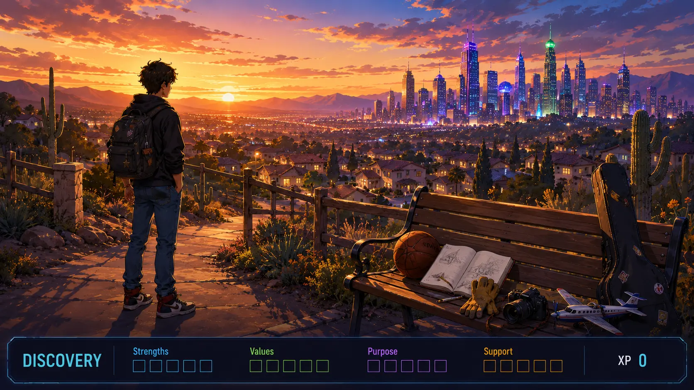

Live pilot boundary: Realtime responses and XP are session/device-level only. Nothing here writes to permanent Level Up progress yet. Private reflections are never projected to the room.
Shared presentation
Scene 1 • Your Discovery Begins
Strengths • Scene 1 of 10

DISCOVERY • STRENGTHS • SCENE 1
Shared micro-lesson
Ready
Responses/completions: 0